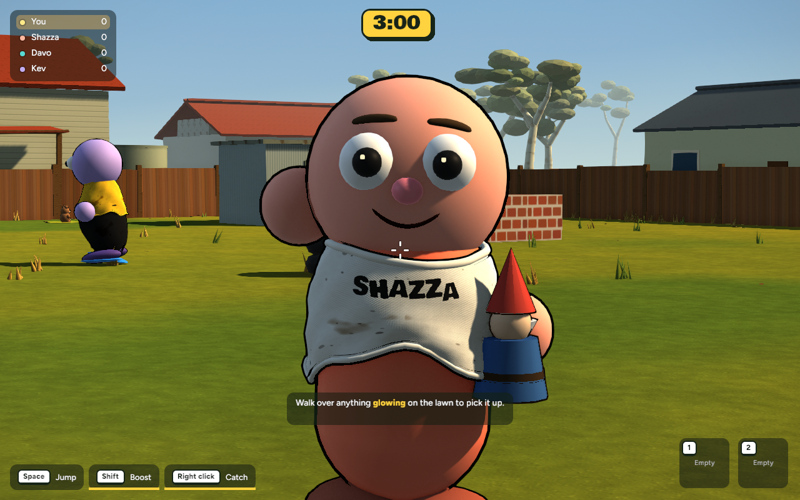
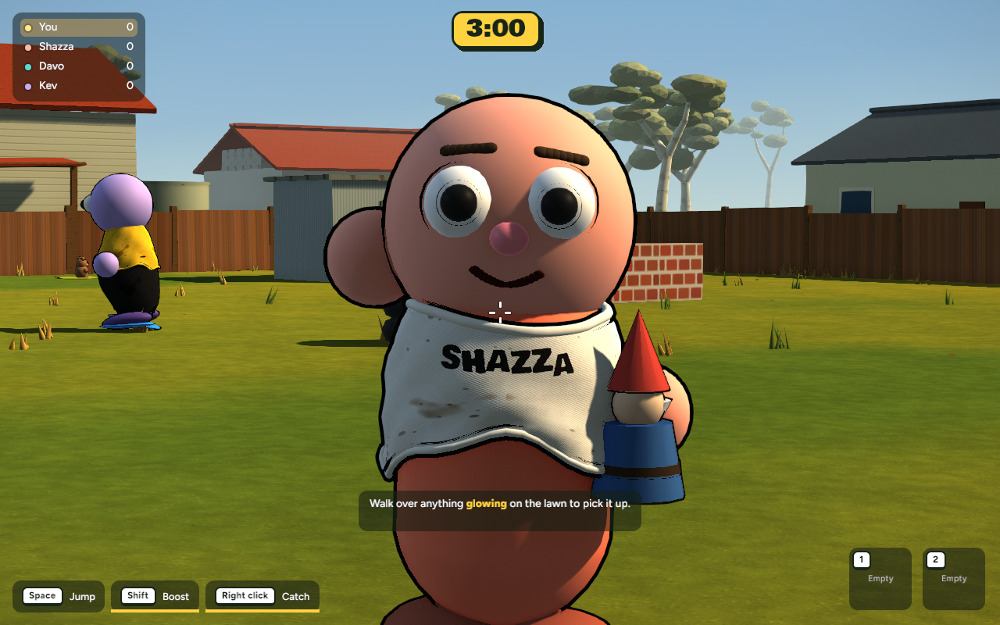

AUSTRALIAN BBQ / CHUCK IT · 14 OCTOBER 2026
A face for every backyard moment.
Milestone 2: characters and expressions. Actual game captures with the same lighting, camera, and simulation frame. Expression portraits are staged using the real game renderer. Awaiting review · Uncommitted


BEFOREAFTER
1280 × 800 · Fixed camera and 60 Hz simulation · Capture at frame 240. Moving particles can vary slightly.
Smoother expressions
Blender-built continuous mouths and brows replace the small overlapping beads. Throws show gritted teeth; hurt reactions have a wider open mouth; cheers show teeth and a tongue.
More life in the eyes
Staggered blinks, a focused squint, wider surprised eyes and small warm highlights. An outline bug that drew unwanted rings around eyes has been corrected.
Your character stays yours
Four existing body shapes and all customization choices remain, including no mouth or brows. The lighting milestone is preserved. This does not claim the finish of the concept art.